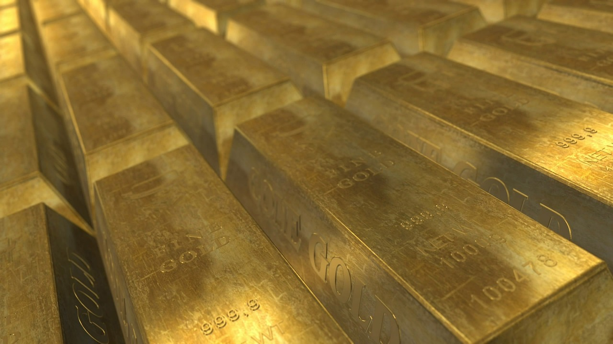
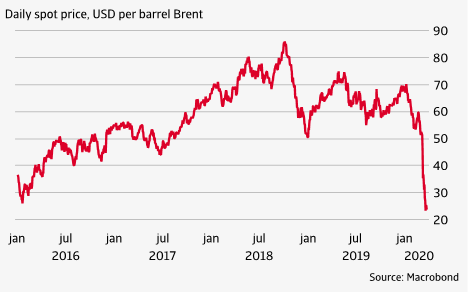

Lektion 4: Wie lege ich mein Geld in Rohstoffe an?
Bei Investitionen bevorzugen wir langfristige, risikoarme Anlagen. Rohstoffe sind ein guter Ausgangspunkt für Einsteiger. Sie bieten nicht nur Sicherheit, sondern auch Wachstumspotenzial, insbesondere in unsicheren wirtschaftlichen Zeiten.
A. Was ist ein Rohstoff?
Ein Rohstoff ist ein grundlegendes Wirtschaftsgut, das entweder direkt aus der Natur gewonnen wird oder durch einen Veredelungsprozess entsteht. Beispiele für Rohstoffe sind Öl, Gold, Silber, Kupfer, Weizen und Kaffee. Sie bilden die Grundlage der Wirtschaft und werden in fast allen Branchen verwendet.
Warum in Rohstoffe investieren?
Rohstoffe bieten einen gewissen Schutz vor Inflation, da ihr Wert in Zeiten wirtschaftlicher Unsicherheit oft steigt. Viele junge Menschen sehen Rohstoffe wie Gold als "sicherer Hafen" an, während andere Rohstoffe wie Öl und Kupfer als wachstumsorientierte Anlagen betrachtet werden können.
B. Wie kann ich Rohstoffe kaufen?
Es gibt verschiedene Möglichkeiten, in Rohstoffe zu investieren:
- Physischer Kauf: Direktes Kaufen und Besitzen von physischen Rohstoffen wie Goldbarren oder Silbermünzen. Diese Methode ist sicher, aber erfordert Lagerung und Versicherung.
- Futures-Kontrakte: Verträge, die den Kauf oder Verkauf einer bestimmten Menge eines Rohstoffs zu einem zukünftigen Zeitpunkt zu einem festgelegten Preis vereinbaren.
- ETFs und ETCs: Börsengehandelte Produkte, die die Preisentwicklung eines oder mehrerer Rohstoffe abbilden, ohne dass man die physischen Rohstoffe besitzen muss.
- Rohstoffaktien: Investieren in Unternehmen, die im Rohstoffsektor tätig sind, wie z.B. Bergbau- oder Ölgesellschaften.
- Rohstofffonds: Investmentfonds, die in eine Vielzahl von Rohstoffen oder Rohstoffunternehmen investieren.
Beispiel: Physischer Kauf von Gold

Gold ist ein klassisches Beispiel für einen physischen Rohstoff. Investoren kaufen häufig Goldbarren oder Münzen, um ihr Vermögen vor Inflation zu schützen.
C. Tipps für junge Investoren
Junge Menschen, die in Rohstoffe investieren möchten, sollten sich gut informieren und eine langfristige Perspektive haben. Hier sind einige Tipps:
- Geduld: Rohstoffe neigen dazu, im Laufe der Zeit an Wert zu gewinnen, bieten aber kurzfristig weniger Rendite. Daher ist eine langfristige Anlagestrategie wichtig.
- Diversifikation: Investiere nicht nur in einen Rohstoff. Durch den Kauf von mehreren Rohstoffen oder Rohstoff-ETFs kannst du Risiken minimieren.
- Informiere dich über den Markt: Verfolge die Entwicklungen in der Rohstoffbranche, wie z.B. geopolitische Ereignisse oder technische Innovationen. Diese können sich direkt auf die Preise auswirken.
- Klein anfangen: Es ist in Ordnung, klein anzufangen. Du musst nicht sofort große Summen in Rohstoffe investieren. ETFs bieten eine einfache Möglichkeit, schon mit wenig Kapital in den Rohstoffmarkt einzusteigen.
D f. Was sind die Risiken?
Investitionen in Rohstoffe sind mit erheblichen Risiken verbunden:
- Volatilität: Rohstoffpreise können stark schwanken, beeinflusst durch Angebot und Nachfrage, geopolitische Ereignisse und wirtschaftliche Faktoren.
- Marktrisiko: Veränderungen auf dem Markt können den Wert der Investition beeinflussen, insbesondere bei Rohstoff-Futures und ETFs.
- Lager- und Versicherungskosten: Physische Rohstoffe erfordern sichere Lagerung und Versicherung, was zusätzliche Kosten verursacht.
- Liquiditätsrisiko: Einige Rohstoffe oder Rohstoffprodukte können schwer zu verkaufen sein, wenn der Markt illiquide ist.
- Regulatorische Risiken: Änderungen in der Gesetzgebung und Regulierung können sich auf den Rohstoffmarkt und die Investitionsmöglichkeiten auswirken.
Beispiel: Volatilität im Ölpreis

Der Preis für Rohöl kann stark schwanken, was es zu einer riskanten, aber potenziell gewinnbringenden Anlage macht.